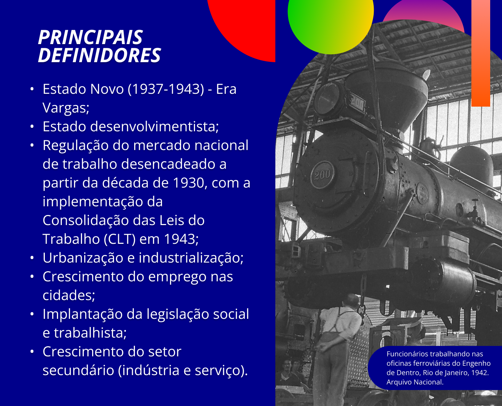

O mundo do trabalho no Brasil
No texto “Tendências estruturais do mundo do trabalho no Brasil” de Pochmann (2020), vê-se que o mundo do trabalho no Brasil, nos últimos duzentos anos, percorreu três temporalidades completamente distintas, porém complementares e articuladas entre si.
A primeira temporalidade, e mais duradoura, correspondeu à sociedade agrária, que, por sua vez, demarcou a especificidade do país em relação a outros, na divisão internacional do trabalho, como produtor e fornecedor de matérias primas.
A sociedade agrária se apoiava na organização do trabalho baseada na transição do trabalho escravo ao trabalho livre, com regulação de contratos de trabalho aos estrangeiros. Três componentes sociais constituíam esse mundo do trabalho: ex-escravizados (pessoas negras africanas submetidas à escravidão no Brasil) tiveram uma inserção postergada e precária no mercado de trabalho brasileiro; imigrantes brancos estrangeiros, incentivados pelas elites agrárias e sua política de branqueamento, tinham papel importante no mercado de trabalho; e segmentos livres, remanescentes de mestiços pobres e negros libertos e fugidos, com ingresso restrito às ocupações.
De acordo com Pochmann (2020, p. 90),
[...] com o predomínio da sociedade agrária, as condições de usos e remuneração da força de trabalho, imediatamente após a abolição da escravidão, seguiram próximas do regime de quase servidão.
Com o fim da escravidão e a transição para o trabalho livre, as elites agrárias mantiveram relações de trabalho precárias e mal remuneradas, análogas à escravidão, submetendo os segmentos livres a situações degradantes de trabalho.
Título: Principais definidores da primeira temporalidade
Fonte: Arquivo Nacional (1910).
Elaboração: Prosa (2024).
A segunda temporalidade corresponde à sociedade urbana e industrial, caracterizada pelo rápido e intenso processo capitalista de modernização conservadora, em vigor entre as décadas de 1930 e 1980.
Essa etapa foi marcada pelo
[...] desenvolvimento urbano e industrial, compreendeu cerca de cinco décadas de estruturação do mercado de trabalho assentado na centralidade do emprego assalariado, especialmente com carteira assinada.

Título: Principais definidores da segunda temporalidade
Fonte: Arquivo Nacional (1942).
Elaboração: Prosa (2024).
A terceira temporalidade, atualmente em curso neste início do século XXI, dá-se com a antecipada passagem da incompleta sociedade urbana e industrial para a sociedade de serviços.
Essa temporalidade é marcada pela desestruturação do funcionamento do mercado de trabalho brasileiro e a ascensão do sistema privado de relações entre o capital e o trabalho (o que chamamos de contratualismo individual). Com isso, cresce a flexibilização da regulação do trabalho e novas formas de contratos “uberizados”, , intermitentes, flexíveis, empreendedores etc.
Ricardo Antunes (2020, p. 39, grifos nossos) a sintetiza da seguinte forma:
[...] nas últimas décadas, os capitais vêm impondo sua trípode destrutiva em relação ao trabalho: a terceirização, a informalidade e a flexibilidade se tornaram partes inseparáveis do léxico da empresa corporativa.
Título: Principais definidores da terceira temporalidade
Fonte: Arquivo Nacional (1966).
Elaboração: Prosa (2024).
Para refletir: o trabalho no Brasil em suas diferentes temporalidades
Nesta reflexão, sugerimos a leitura do texto completo de Pochmann (2020) e, a partir dele, pedimos que você caracterize e relacione as três temporalidades com foco na seguinte questão: quem é o trabalhador e como as relações de trabalho se configuram em cada uma delas? Além disso, observe a ilustração abaixo e reflita como as relações de trabalho têm se alterado nos últimos anos.
Título: A “uberização” do trabalho
Fonte: Prosa (2024c).
É importante destacar que, apesar das transformações no mundo do trabalho, resquícios das velhas relações permanecem travestidas em novas roupagens, que, por sua vez, intensificam a exploração do trabalho e dos trabalhadores e aumentam os lucros daqueles que detêm os meios de produção.
Nessa realidade, o trabalho, mesmo trazendo a alienação e o sofrimento à classe trabalhadora, carrega em si contradições e o seu potencial ontológico. Ou seja, traz a capacidade de despertar nos homens e nas mulheres a resistência às mais diversas formas de opressão-exploração e enseja a luta pelo trabalho que gere prazer e dignidade, rumo à emancipação humana.